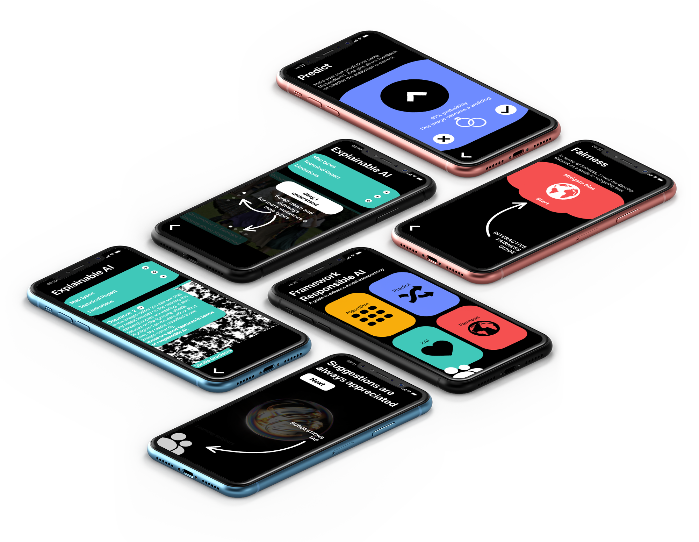
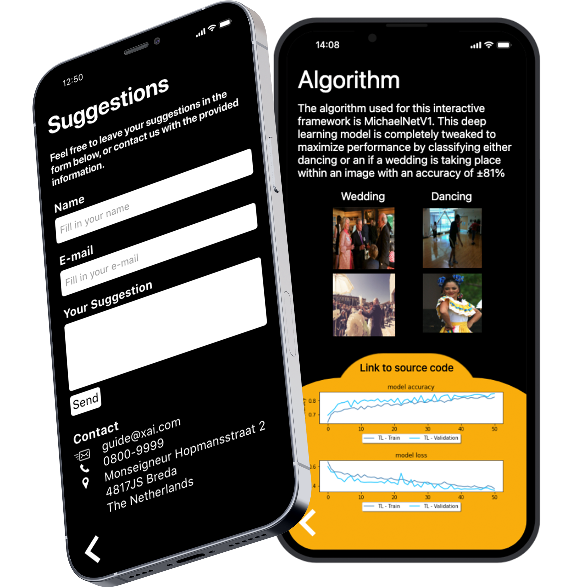
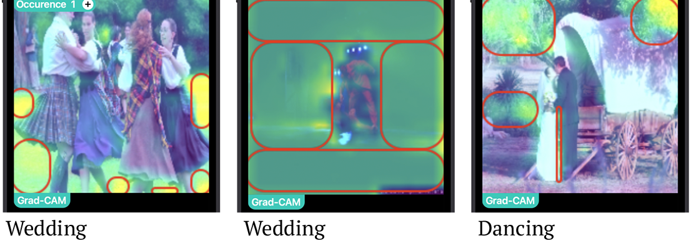
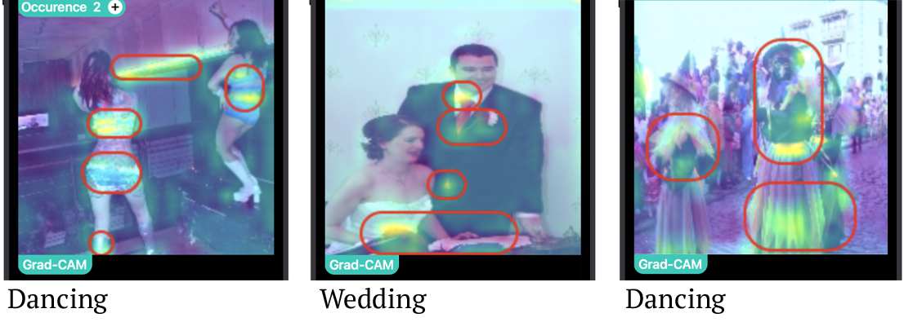

April, 2022
Responible AI
App Prototype
This prototype contains my image classification algorithm using Deep Neural Networks.
This algorithm incorporates multiple key aspects:
better fairness, transparency, explainability, and less bias that is shown in this application.
With this, artificial intelligence specialists can use my application for other use-cases regarding image classification.

Slideshow Demo of Three Screens
Swipe the slideshow for the next tab
Slideshow tab 1: The welcoming screen in the form of a little guide. The welcoming screen contains three states explaining the functionality of the app.
Slideshow tab 2: The Fairness screen. This screen explains what has been done to mitigate bias.
Slideshow tab 3: The Prediction screen. This screen shows the flow of how a prediction in the app work.
Swipe the slideshow for the next tab
Demo of other screens
Users can share their thoughts and ideas to help improve this guide/framework.
Allowing for suggestions adds some level of transparency, and supervision.

Demo of the Explainable AI (XAI) screen
Grad-CAM visuals that are shown in the XAI Screen.
Not repsonible in terms of XAI

Repsonible in terms of XAI

Visual of the XAI screen
Note: visual is a moving GIF